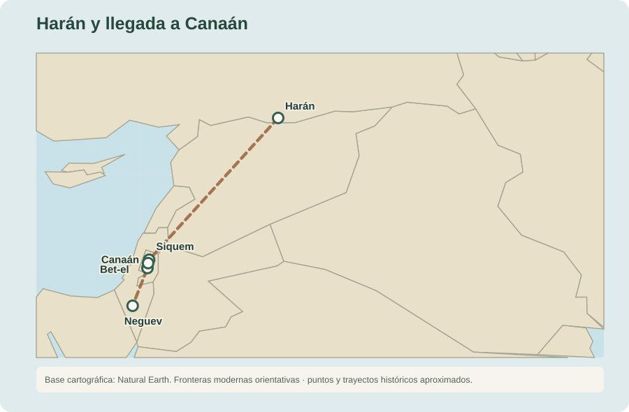
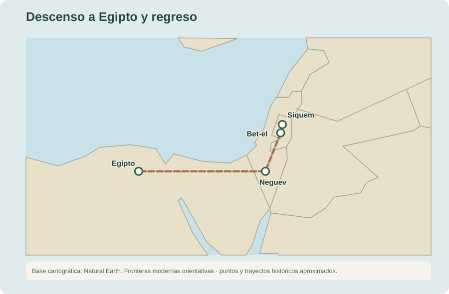
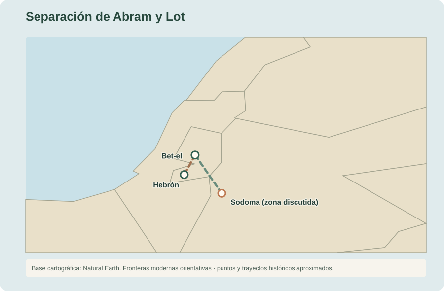

12:1 Pero Jehová había dicho a Abram: Vete de tu tierra y de tu parentela, y de la casa de tu padre, a la tierra que te mostraré.82
12:2 Y haré de ti una nación grande, y te bendeciré, y engrandeceré tu nombre, y serás bendición.
12:3 Bendeciré a los que te bendijeren, y a los que te maldijeren maldeciré; y serán benditas en ti todas las familias de la tierra.
12:4 Y se fue Abram, como Jehová le dijo; y Lot fue con él. Y era Abram de edad de setenta y cinco años cuando salió de Harán.
12:5 Tomó, pues, Abram a Sarai su mujer, y a Lot hijo de su hermano, y todos sus bienes que habían ganado, y las personas que habían adquirido en Harán, y salieron para ir a tierra de Canaán; y a tierra de Canaán llegaron.83
12:6 Y pasó Abram por aquella tierra hasta el lugar de Siquem, hasta el encino de More. Y el cananeo estaba entonces en la tierra.84
12:7 Y apareció Jehová a Abram, y le dijo: A tu descendencia daré esta tierra. Y edificó allí un altar a Jehová, quien le había aparecido.85
12:8 Luego se pasó de allí a un monte al oriente de Bet-el, y plantó su tienda, teniendo a Bet-el al occidente y Hai al oriente; y edificó allí altar a Jehová, e invocó el nombre de Jehová.86

12:9 Y Abram partió de allí, caminando y yendo hacia el Neguev.

12:10 Hubo entonces hambre en la tierra, y descendió Abram a Egipto para morar allá; porque era grande el hambre en la tierra.87
12:11 Y aconteció que cuando estaba para entrar en Egipto, dijo a Sarai su mujer: — He aquí ahora conozco que eres mujer de hermoso aspecto;
12:12 y cuando te vean los egipcios, dirán: Su mujer es; y me matarán a mí, y a ti te reservarán la vida.
12:13 Ahora, pues, di que eres mi hermana, para que me vaya bien por causa tuya, y viva mi alma por causa de ti.
12:14 Y aconteció que cuando entró Abram en Egipto, los egipcios vieron que la mujer era hermosa en gran manera.
12:15 También la vieron los príncipes de Faraón, y la alabaron delante de él; y fue llevada la mujer a casa de Faraón.
12:16 E hizo bien a Abram por causa de ella; y éste tuvo ovejas, vacas, asnos, siervos, criadas, asnas y camellos.
12:17 Mas Jehová hirió a Faraón y a su casa con grandes plagas, por causa de Sarai mujer de Abram.88
12:18 Entonces Faraón llamó a Abram, y le dijo: — ¿Qué es esto que has hecho conmigo? ¿Por qué no me declaraste que era tu mujer?
12:19 ¿Por qué dijiste: Es mi hermana, poniéndome en ocasión de tomarla para mí por mujer? Ahora, pues, he aquí tu mujer; tómala y vete.
12:20 Entonces Faraón dio orden a su gente acerca de Abram; y le acompañaron, y a su mujer, con todo lo que tenía.
13:1 Subió, pues, Abram de Egipto hacia el Neguev, él y su mujer, con todo lo que tenía, y con él Lot.
13:2 Y Abram era riquísimo en ganado, en plata y en oro.
13:3 Y volvió por sus jornadas desde el Neguev hacia Bet-el, hasta el lugar donde había estado antes su tienda entre Bet-el y Hai,
13:4 al lugar del altar que había hecho allí antes; e invocó allí Abram el nombre de Jehová.

13:5 También Lot, que andaba con Abram, tenía ovejas, vacas y tiendas.
13:6 Y la tierra no era suficiente para que habitasen juntos, pues sus posesiones eran muchas, y no podían morar en un mismo lugar.
13:7 Y hubo contienda entre los pastores del ganado de Abram y los pastores del ganado de Lot; y el cananeo y el ferezeo habitaban entonces en la tierra.
13:8 Entonces Abram dijo a Lot: — No haya ahora altercado entre nosotros dos, entre mis pastores y los tuyos, porque somos hermanos.89
13:9 ¿No está toda la tierra delante de ti? Yo te ruego que te apartes de mí. Si fueres a la mano izquierda, yo iré a la derecha; y si tú a la derecha, yo iré a la izquierda.
13:10 Y alzó Lot sus ojos y vio toda la llanura del Jordán, que toda ella era de riego, como el huerto de Jehová, como la tierra de Egipto en la dirección de Zoar, antes que destruyese Jehová a Sodoma y a Gomorra.90
13:11 Entonces Lot escogió para sí toda la llanura del Jordán, y se fue Lot hacia el oriente, y se apartaron el uno del otro.
13:12 Abram acampó en la tierra de Canaán, en tanto que Lot habitó en las ciudades de la llanura, y fue poniendo sus tiendas hasta Sodoma.91
13:13 Mas los hombres de Sodoma eran malos y pecadores contra Jehová en gran manera.92
13:14 Y Jehová dijo a Abram, después que Lot se apartó de él: Alza ahora tus ojos, y mira desde el lugar donde estás hacia el norte y el sur, y al oriente y al occidente.
13:15 Porque toda la tierra que ves, la daré a ti y a tu descendencia para siempre.
13:16 Y haré tu descendencia como el polvo de la tierra; que si alguno puede contar el polvo de la tierra, también tu descendencia será contada.
13:17 Levántate, ve por la tierra a lo largo de ella y a su ancho; porque a ti la daré.
13:18 Abram, pues, removiendo su tienda, vino y moró en el encinar de Mamre, que está en Hebrón, y edificó allí altar a Jehová.93

Notas del editor
- 82El uso de «había dicho» sugiere que Jehová pudo haber llamado a Abram antes de su salida de Harán. Según Hechos 7:2–4, Dios se apareció a Abraham cuando todavía vivía en Mesopotamia, antes de establecerse en Harán. ↩
- 83Aunque leyendo algunos pasajes da la sensación de que Abram viaja sólo con su mujer y Lot; lo cierto es que, como líder de un clan nómada, Abram supervisaba una cantidad significativa de personal y ganado. Entre este personal se encontraban pastores de ovejas, cuidadores de ganado, arrieros de camellos y burros, administradores, comerciantes, incluso guerreros. No todo el personal era servidumbre, había profesionales a sueldo y miembros distantes de la familia del clan. Por tanto, no debe verse “adquirido” como necesariamente “comprado” sino que también puede leerse como “contratado”. ↩
- 84Con toda probabilidad, “el encino de More” era un topónimo local para el campo donde se asentó Abraham. ↩
- 85Estos altares eran lugares improvisados de culto probablemente realizados amontonando piedras cercanas. En libros posteriores, con la construcción del tabernáculo, y el templo, Jehová prohibirá el culto en este tipo de altares (llemados “lugares altos” porque solían edificarse en montes o terraplenes). ↩
- 86De nuevo, no debe verse como una tienda individual, sino como un campamento extenso con tiendas comunales para los trabajadores y estructuras semi-permanentes para resguardar el ganado y almacenar la comida. ↩
- 87La clanes nómadas que viajaban de un sitio a otro buscado pastos para sus animales dependían mucho de la temporada. En épocas de sequía, se resguardaban en sitios frondosos cercanos a los ríos. El fértil Delta del Nilo era una baza segura para los habitantes del Medio Oriente cuando todo lo demás fallaba. ↩
- 88La Biblia nunca menciona el nombre del faraón de turno pero claramente debían ser faraones distintos con cada visita. ↩
- 89Al igual que los nietos y bisnietos eran considerados hijos. Los descendientes de un mismo padre (hijo y nieto en este caso) eran considerados todos hermanos entre sí. ↩
- 90Esta escena debía desarrollarse en las montañas desde donde se podía divisar toda la tierra baja de Canaán y, en particular, el valle de Sidim en el Jordán. ↩
- 91Como hemos dicho los clanes nómadas plantaban sus tiendas/campamentos cíclicamente a lo largo del año buscando pasto para su ganado. Aunque las tiendas se montaban y desmontaban cada vez, algunos marcadores y estructuras quedaban en el lugar disponibles para el regreso la siguiente temporada. ↩
- 92Esta es la primera caracterización explícita de la maldad de Sodoma. La observación anticipa los acontecimientos de Génesis 18–19, donde se relatará el juicio divino sobre Sodoma y Gomorra. ↩
- 93De nuevo, es probable que sea un topónimo local que referenciaba el lugar concreto de los alrededores de Hebrón donde Abraham plantó el campamento. ↩